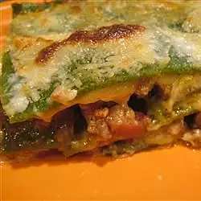

Lasagne Verdi al Forno

Ingredients
Pasta
- 5 ounces spinach - rinsed, stemmed, and dried
- 2 eggs
- ⅝ cup semolina flour
- 1 teaspoon salt
- 1 ½ cups all-purpose flour
Ragu
- 2 tablespoons butter
- 2 slices bacon, diced
- 1 carrot, diced
- 1 stalk celery, diced
- 1 onion, diced
- 3 ½ ounces lean ground pork
- 3 ½ ounces lean ground beef
- 3 ½ ounces minced ham
- 2 tablespoons tomato paste
- 1 teaspoon dried oregano
- 1 cup beef stock
- Salt and pepper to taste
- 3 ½ ounces chicken livers, trimmed and chopped
Bechamel
- 2 tablespoons butter
- 2 tablespoons all-purpose flour
- 2 cups warm milk
- 1 pinch salt
- 1 pinch ground nutmeg
Cheese
- 1 ⅔ cups grated Parmesan cheese
- 1 pint ricotta cheese
- 3 tablespoons butter
Directions
For the pasta dough:
- Steam the spinach in a steamer or over boiling water until bright green, 2 minutes.
- Squeeze to remove excess moisture and process in a food processor to make a paste.
- Combine spinach with eggs, semolina, and salt and process until smooth.
- Stir in enough of the flour to make a smooth dough.
- Knead briefly, cover and set aside.
For the ragu:
- In a large skillet, melt butter over medium-high heat.
- Saute bacon, carrot, celery and onion until onion is translucent.
- Stir in ground pork, ground beef and minced ham, and cook until browned.
- Stir in tomato paste, oregano and beef stock. (Reserve the chicken livers for later.)
- Season with salt and pepper, reduce heat to low, cover and simmer 20 minutes.
For the bechamel:
- While the ragu is simmering, combine 2 tablespoons butter and 2 tablespoons flour in a medium saucepan over medium-low heat.
- Whisk to make a roux. Remove from heat, let rest one minute, then whisk in warm milk.
- Return to heat, simmer 10 minutes, stirring constantly, until thickened.
- Season with salt and nutmeg. Remove from heat.
To cook the pasta:
- Bring a large pot of lightly salted water to a boil.
- On a floured surface, divide pasta dough into three portions.
- Roll each portion out to a thin sheet. Have ready an ice water bath.
- Cook each sheet 3 minutes in the boiling water; remove from the boiling water and dip in the ice water; drain and dry on a clean, dry cloth.
To finish the ragu:
- Stir the chicken livers into the simmering sauce.
- Cook 1 minute, remove from heat and set aside.
Preheat oven:
- Preheat oven to 400 degrees F (200 degrees C).
- Grease a 9x13 baking dish.
To assemble lasagna:
- Place one pasta sheet in bottom of prepared baking dish.
- Spread one-third of the ragu, one-quarter of the bechamel, one-third of the ricotta, and one-quarter of the parmesan over the pasta.
- Repeat layers twice.
- Top with remaining bechamel and parmesan and dot with butter.
Bake
- Bake in preheated oven 30 minutes, until top is golden brown.
Nutritional Facts
Per Serving: 552 calories; protein 31.8g; carbohydrates 31.4g; fat 33g; cholesterol 186.6mg; sodium 1044.4mg.
Back to main recipe page